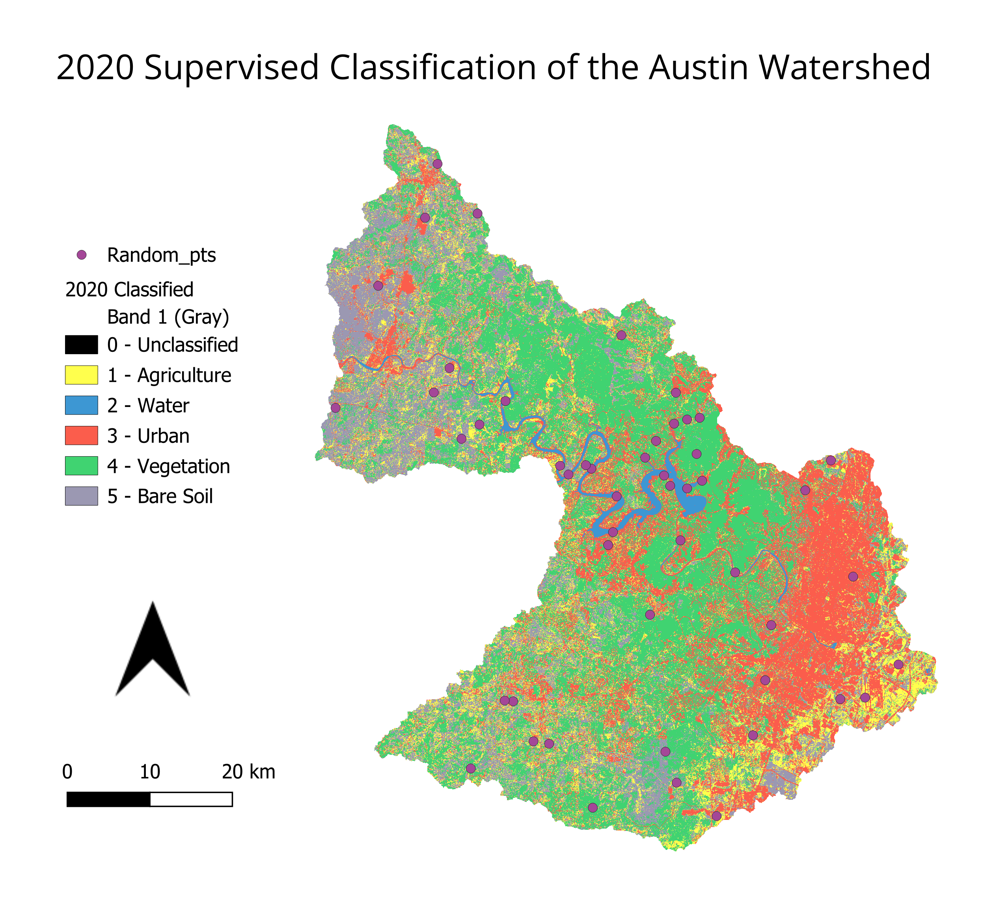
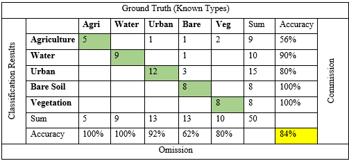

Landuse/Landcover Supervised Classification of Austin Watershed AOI
Tools: QGIS, Supervised Classification, Rasters
Overview
The Supervised Classification Plugin (SCP) was used in QGIS in order to semi-automatically classify landuse/landcover in the Austin area watershed
using a set of manually selected samples from a true color image. Result accuracy were tested using a selection of random points with known ground truths.
Data
Landsat 8 bands (1-7) clipped to the Austin Watershed area of interest
Workflow/Methods
All bands (besides thermal) from Landsat-8 image loaded into QGIS Supervised Classification Plugin (SCP) band sets
Spectral training set gathered for landuse/landcover types of Agriculture, Water, Urban, Vegetation, and Bare Soil with the natural color band combination.
Ran classification with training set making output landuse/landcover raster.
Accuracy of classification tested with random points with known ground truths with a confusion matrix and kappa hat.
Results

Austin Watershed AOI by Landuse/Landcover Classification (km^2)
Agricultural
Urban
Water
Vegetation
Bare Soil
460.6902
56.1771
802.5255
1190.7558
701.9784
Accuracy
Confusion Matrix

Kappa Hat = 0.798, Moderate-Strong Agreement.
Limitations/Possible Improvements
More samples could be used in the bare soil class. It is hard to distinguish landuse from landcover from the case of agriculture and vegetation with these classes having similar spectral signatures in this dataset.
Limitations of Landsat's spectral and spatial resolution in accuracy, more bands and higher spatial resolution could improve results.